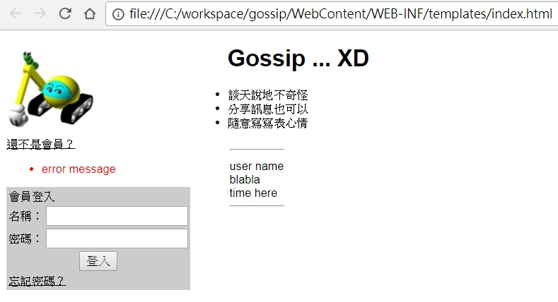

或許你曾經聽說過或看過「JSP 已經過時了」這類的論調，當然，這論調也有許多開發者不認同，你可以在網路上搜尋看看兩造人馬的說法，這邊並不評論 JSP 是否過時了這件事。
不過，JSP 確實不是唯一的頁面呈現技術，如果你瞭解 JSP，有機會也可以接觸其他模版引擎，未來在評估採用何種頁面呈現技術時，總是可以多個選擇。
如果使用 Spring MVC，在模版引擎的選擇上，能見度高的選擇之一是 Thymeleaf，也是 Spring Boot 推薦的模版引擎，它主打的特性之一是自然模版（Natural template），模版頁面本身是只需瀏覽器就可檢視的 HTML，例如：
<!DOCTYPE html>
<html xmlns="http://www.w3.org/1999/xhtml"
xmlns:th="http://www.thymeleaf.org">
<head>
<meta charset="UTF-8">
<title>Gossip 微網誌</title>
<link rel="stylesheet" href="css/gossip.css" type="text/css">
</head>
<body>
<div id="login">
<div>
<img src='images/caterpillar.jpg' alt='Gossip 微網誌'/>
</div>
<a href='register'>還不是會員？</a>
<p></p>
<ul th:if="${errors != null}" style='color: rgb(255, 0, 0);'>
<li th:each="error : ${errors}" th:text="${error}">error message</li>
</ul>
<form method='post' action='login'>
<table>
<tr>
<td colspan='2'>會員登入</td>
<tr>
<td>名稱：</td>
<td><input type='text' name='username'
th:value="${param.username}"></td>
</tr>
<tr>
<td>密碼：</td>
<td><input type='password' name='password'></td>
</tr>
<tr>
<td colspan='2' align='center'>
<input type='submit' value='登入'>
</td>
</tr>
<tr>
<td colspan='2'>
<a href='forgotPwd.html'>忘記密碼？</a>
</td>
</tr>
</table>
</form>
</div>
<div>
<h1>Gossip ... XD</h1>
<ul>
<li>談天說地不奇怪</li>
<li>分享訊息也可以</li>
<li>隨意寫寫表心情</li>
</ul>
<table style='background-color:#ffffff;'>
<thead>
<tr>
<th><hr></th>
</tr>
</thead>
<tbody>
<tr th:each="message : ${newest}">
<td style='vertical-align: top;'>
<span th:text="${message.username}">user name</span><br>
<span th:utext="${message.blabla}">blabla</span><br>
<span th:text="${message.localDateTime}">time here</span>
<hr>
</td>
</tr>
</tbody>
</table>
</div>
</body>
</html>
這是一個完全合法的 HTML 文件，直接在瀏覽器上開啟，也可以顯示原型頁面：

如果沒有在 Web 容器上運行，使用瀏覽器來直接開啟一個 JSP 檔案，只會直接顯示 JSP 原始碼內容而已。
如果想在 Spring MVC 中改用 Thymeleaf 模版作為呈現技術，可以在 build.gradle 裏頭加入：
compile 'org.thymeleaf:thymeleaf-spring5:3.0.11.RELEASE'
並在 WebConfig 中替換 ViewResolver 實作：
package cc.openhome.web;
...略
@Configuration
@EnableWebMvc
@PropertySource("classpath:path.properties")
@ComponentScan("cc.openhome.controller")
public class WebConfig implements WebMvcConfigurer, ApplicationContextAware {
private ApplicationContext applicationContext;
@Override
public void setApplicationContext(ApplicationContext applicationContext) throws BeansException {
this.applicationContext = applicationContext;
}
...略
@Bean
public ITemplateResolver templateResolver() {
// 透過此實例進行相關設定，後續用來建立模版引擎物件
SpringResourceTemplateResolver resolver = new SpringResourceTemplateResolver();
resolver.setApplicationContext(applicationContext);
// 開發階段可設定為不快取模版內容，修改模版才能即時反應變更
resolver.setCacheable(false);
// 搭配控制器傳回值的前置名稱
resolver.setPrefix("/WEB-INF/templates/");
// 搭配控制器傳回值的後置名稱
resolver.setSuffix(".html");
// HTML 頁面編碼
resolver.setCharacterEncoding("UTF-8");
// 這是一份 HTML 文件
resolver.setTemplateMode(TemplateMode.HTML);
return resolver;
}
@Bean
public SpringTemplateEngine templateEngine(ITemplateResolver templateResolver) {
// 建立與設定模版引擎
SpringTemplateEngine engine = new SpringTemplateEngine();
engine.setEnableSpringELCompiler(true);
engine.setTemplateResolver(templateResolver);
return engine;
}
@Bean
public ViewResolver viewResolver(SpringTemplateEngine engine) {
// 建立ViewResolver實作物件並設置模版引擎實例
ThymeleafViewResolver resolver = new ThymeleafViewResolver();
resolver.setTemplateEngine(engine);
// 回應內容編碼
resolver.setCharacterEncoding("UTF-8");
resolver.setCache(false);
return resolver;
}
}
接下來，就可以將 JSP 頁面，逐一改造為 Thymeleaf 的 HTML 模版，詳細說明 Thymeleaf 的 HTML 模版如何撰寫，不在這系列的文件設定範圍內，然而，若有 JSTL 或其他模版引擎的使用經驗，學習 Thymeleaf 模版的撰寫並不困難，這部份可參考官方文件〈Tutorial: Using Thymeleaf〉。
雖然不打算說明如何撰寫 Thymeleaf 的 HTML 模版，然而 gossip 中已經將全部的 JSP 改寫為 Thymeleaf 的 HTML 模版，可作為參考之用。